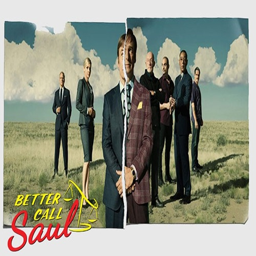

Breaking Bad
Resumen: "Breaking Bad" sigue la historia de Walter White, un profesor de química de secundaria que, después de ser diagnosticado con cáncer terminal, decide entrar en el mundo del narcotráfico para asegurar el futuro financiero de su familia. Con la ayuda de su antiguo estudiante Jesse Pinkman, Walter se convierte en el fabricante de metanfetaminas conocido como "Heisenberg", enfrentándose a peligrosos carteles de drogas y a su propia moralidad en el camino.
Categoría: Drama
Actores Principales: Bryan Cranston, Aaron Paul, Anna Gunn

Better Call Saul
Resumen: "Better Call Saul" es un spin-off de "Breaking Bad" que se centra en la vida de Jimmy McGill, un abogado con problemas éticos que más tarde adopta el alias de "Saul Goodman". La serie explora el ascenso de Jimmy en el mundo legal mientras lidia con su relación complicada con su hermano Chuck, su novia Kim, y los desafíos morales que enfrenta en un mundo lleno de corrupción y crimen.
Categoría: Drama
Actores Principales: Bob Odenkirk, Jonathan Banks, Rhea Seehorn
The Walking Dead
Resumen: "The Walking Dead" sigue a un grupo de supervivientes liderados por el oficial de policía Rick Grimes, quienes luchan por sobrevivir en un mundo post-apocalíptico infestado de zombies. La serie examina las complejidades de las relaciones humanas y la lucha por la supervivencia mientras el grupo enfrenta constantes amenazas tanto de los caminantes como de otros sobrevivientes.
Categoría: Terror, Drama